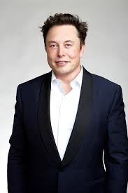

Elon Musk es un empresario y magnate nacido en 1971 en Pretoria, Sudáfrica, con ciudadanía sudafricana, canadiense y estadounidense. Es conocido por fundar y liderar varias empresas tecnológicas de gran impacto, como SpaceX, donde es director ejecutivo e ingeniero jefe, y Tesla, Inc., donde también es director y arquitecto de productos. Además, ha participado en la creación de otras compañías como Neuralink, The Boring Company y fue cofundador de OpenAI. Pasó parte de su juventud en Sudáfrica y luego estudió en Canadá y en Estados Unidos, donde se formó en economía y física en la Universidad de Pensilvania. Abandonó un doctorado en Stanford para dedicarse a los negocios. Su primera empresa importante fue Zip2, vendida a Compaq, y luego cofundó X.com, que se convirtió en PayPal y fue adquirida por eBay. Con las ganancias de estas empresas, Musk impulsó proyectos más ambiciosos como SpaceX (exploración espacial) y Tesla (vehículos eléctricos), además de iniciativas en energía solar, inteligencia artificial y neurotecnología. También adquirió la red social Twitter, luego renombrada X. Es una de las personas más ricas del mundo, aunque también ha sido objeto de controversias por sus declaraciones públicas y algunas decisiones empresariales.
Elon Musk proviene de una familia con raíces europeas: por parte materna desciende de protestantes suizos y su madre, Maye Haldeman, es canadiense; por parte paterna, su familia es de origen inglés. Su padre, Errol Musk, fue ingeniero y empresario en Sudáfrica. Sus padres tuvieron tres hijos y la familia era acomodada durante su infancia. Musk creció con bastante libertad, aunque su infancia estuvo marcada por conflictos familiares y el divorcio de sus padres. Vivió con su padre en Sudáfrica durante un tiempo, pero luego se trasladó a vivir con su madre y hermanos. En la escuela sufrió acoso escolar, lo que lo llevó a aprender defensa personal. Desde muy pequeño mostró gran interés por la tecnología: a los 10 años ya programaba y a los 12 creó un videojuego llamado Blastar, que vendió a una revista. Usaba sus ganancias para comprar libros, computadoras y juegos. A los 17 años emigró a Canadá para facilitar su futuro traslado a Estados Unidos. Estudió en la Universidad de Pensilvania, donde obtuvo títulos en Economía y Física. Luego intentó un doctorado en Stanford, pero lo abandonó rápidamente para dedicarse a emprender en el mundo tecnológico. Antes de fundar sus empresas, trabajó en proyectos relacionados con tecnología avanzada, lo que reforzó su interés por áreas como internet, la energía renovable y la exploración espacial, que luego se convertirían en el centro de sus negocios.
Elon Musk fundó la empresa Zip2 en 1995 junto con su hermano Kimbal Musk y su amigo Greg Curry. Musk había comenzado un doctorado en Stanford University, pero abandonó los estudios a los dos días para dedicarse completamente al emprendimiento. Zip2 desarrollaba y mantenía sitios web para empresas de medios de comunicación, permitiéndoles tener presencia en internet mediante directorios con mapas y rutas, algo parecido a una combinación temprana de Google Maps y Yelp. La empresa utilizó tecnología avanzada para la época, como mapas vectoriales en Java, que cargaban más rápido en la lenta internet de los años noventa. Mientras Elon se encargaba de la programación e ingeniería, Kimbal buscaba inversores y realizaba las ventas. Durante los primeros años tuvieron graves dificultades económicas: vivían en la oficina de la empresa, se duchaban en la YMCA y comían comida barata para ahorrar dinero. Con el crecimiento de internet, Zip2 empezó a trabajar con importantes medios de comunicación como The New York Times, Hearst Corporation y Pulitzer Publishing. En 1999, la empresa fue comprada por Compaq por 307 millones de dólares, y Elon Musk recibió aproximadamente 22 millones de dólares por la venta.
En 1999, Elon Musk fundó X.com junto con Harris Fricker, Ho y Christopher Payne, invirtiendo doce millones de dólares. X.com fue uno de los primeros bancos por internet y ofrecía servicios financieros digitales con depósitos asegurados por la FDIC. Sin embargo, desde el comienzo hubo conflictos internos y varios socios abandonaron la empresa. Al mismo tiempo existía Confinity, fundada por Peter Thiel, Max Levchin y Luke Nosek, que desarrolló PayPal, un sistema de pagos electrónicos entre usuarios. En el año 2000 ambas compañías se fusionaron bajo el nombre X.com, y Musk quedó como director ejecutivo y mayor accionista. La empresa creció rápidamente y consiguió grandes inversiones de bancos como Deutsche Bank y Goldman Sachs. Sin embargo, surgieron fuertes conflictos sobre la dirección tecnológica y administrativa. Mientras el equipo de Confinity quería usar Linux y software de código abierto, Musk prefería la tecnología de Microsoft. En septiembre de 2000, mientras Musk viajaba hacia su luna de miel en Australia, la junta directiva lo destituyó como director ejecutivo y nombró a Peter Thiel en su lugar. Aunque perdió poder dentro de la empresa, Musk siguió siendo el mayor accionista y asesor. En 2001 la compañía cambió oficialmente su nombre a PayPal. Un año después comenzó a cotizar en bolsa y fue comprada por eBay por 1500 millones de dólares en acciones. Gracias a su participación accionaria, Musk ganó alrededor de 180 millones de dólares después de impuestos. Ese dinero le permitió financiar nuevos proyectos: destinó fondos a crear SpaceX, invertir en Tesla y apoyar SolarCity. Además, varios exintegrantes de PayPal fundaron empresas tecnológicas muy importantes, como YouTube, LinkedIn, Yelp y Palantir Technologies, formando lo que luego se conoció como la “PayPal Mafia”.
En 2002, Elon Musk comenzó a investigar cómo llevar misiones a Marte de forma más económica. Tras intentar comprar cohetes rusos sin éxito, decidió crear su propia empresa aeroespacial. Así nació SpaceX (Space Exploration Technologies), fundada en California. La empresa se enfocó en desarrollar cohetes reutilizables y reducir drásticamente los costos de los lanzamientos espaciales. Musk diseñó un modelo de negocio basado en integración vertical, fabricando internamente gran parte de los componentes. También identificó oportunidades en el lanzamiento de pequeños satélites. Los primeros proyectos de SpaceX fueron los cohetes Falcon 1 y Falcon 9, además de la cápsula espacial Dragon. En 2009, el Falcon 1 se convirtió en el primer cohete privado de combustible líquido en colocar un satélite en órbita terrestre. En 2008, NASA firmó con SpaceX un contrato de 1600 millones de dólares para realizar misiones de abastecimiento a la Estación Espacial Internacional utilizando Falcon 9 y Dragon. Esto ayudó a reemplazar las funciones del Transbordador Espacial después de su retiro. La visión de Musk iba más allá de los negocios: considera que la humanidad debe convertirse en una especie multiplanetaria para garantizar su supervivencia frente a amenazas globales como guerras nucleares, pandemias o desastres naturales. Por eso, uno de los objetivos principales de SpaceX es llevar astronautas a Marte y hacer posible la colonización espacial. En pocos años, SpaceX pasó de ser una startup privada a convertirse en una de las empresas espaciales más importantes del mundo, destacándose por la innovación, la reutilización de cohetes y la reducción de costos en los viajes espaciales.
Tesla nació con la idea de fabricar autos eléctricos deportivos y demostrar que podían ser rápidos, eficientes y atractivos. La inspiración surgió cuando Elon Musk y J. B. Straubel conocieron un prototipo eléctrico desarrollado por AC Propulsion. Como la empresa no quería comercializarlo, Musk se unió a Martin Eberhard y Marc Tarpenning para crear Tesla Motors. En 2004 Musk invirtió 6,3 millones de dólares, aportando casi toda la financiación inicial. Más adelante, durante la crisis financiera de 2008, Tesla estuvo cerca de la bancarrota y Musk asumió el cargo de director ejecutivo para salvar la compañía. El plan de Tesla era comenzar con un coche deportivo caro, usar las ganancias para fabricar modelos más accesibles y acelerar la transición hacia la energía sostenible. El primer vehículo fue el Tesla Roadster, un deportivo eléctrico con gran aceleración y autonomía, aunque su desarrollo fue mucho más costoso de lo esperado. Aprendiendo de esos problemas, Tesla diseñó desde cero el Tesla Model S, un automóvil eléctrico de lujo con gran rendimiento, actualizaciones de software remotas y acceso a la red de cargadores rápidos Supercharger. Más adelante llegaron el SUV Tesla Model X, el más económico y masivo Tesla Model 3 y el crossover Tesla Model Y. Tesla también apostó por la integración vertical, fabricando muchas de sus propias piezas porque los proveedores tradicionales no confiaban en la empresa. En 2010 compró la antigua fábrica NUMMI de GM y Toyota para aumentar su producción. Otro aspecto importante fue el desarrollo del sistema Tesla Autopilot, basado en inteligencia artificial y aprendizaje automático. Los vehículos recopilan datos de conducción reales para mejorar continuamente las capacidades autónomas mediante actualizaciones remotas. Además de fabricar automóviles, Tesla expandió su negocio hacia la energía solar y el almacenamiento energético, adquiriendo SolarCity en 2016. También construyó grandes fábricas, como la Gigafactory de Shanghái en China. Con el tiempo, Tesla se convirtió en una de las empresas automotrices más valiosas del mundo y en uno de los principales impulsores de la transición global hacia los vehículos eléctricos y la energía sostenible.